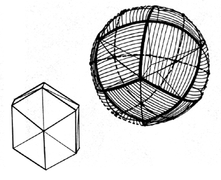

Fig. 454.01C The six great circles of the vector equilibrium disclose the 12 rhombic diamond facets (cross-hatching) of the rhombic dodecahedron, whose centers are coincident the the 12 vertexes (dots) of the vector equilibrium.
Copyright © 1997 Estate of R. Buckminster Fuller